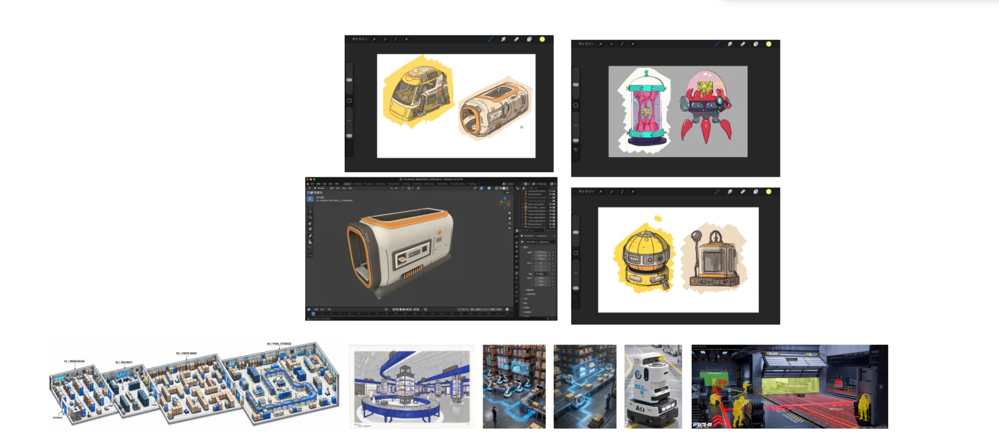

Player movement implementation
I am responsible for player movement implementation in Unity. My work focuses on the movement and controls that let the player navigate and explore the stages.
A future world,
and a journey through memory.
Set in a future world, the concept follows a young Modorian girl and her talkative robot companion. They take requests from a local bulletin board while trying to recover a cherished memory shared with her grandmother.

TEAM PLANNING MATERIALSUNITY / GROUP PROJECTA girl and her robot companion take on requests while helping people reconnect with their memories.
In the planning materials, the protagonist is a young freelancer who accepts jobs from a local bulletin board. As her grandmother's birthday approaches, she discovers that her grandmother can no longer remember a cherished day they shared. The girl turns to a memory device in the hope of recovering that memory.
The team uses Miro to organize and share ideas for the story, characters, stage layouts and gameplay systems.

I am responsible for player movement implementation in Unity. My work focuses on the movement and controls that let the player navigate and explore the stages.
I am responsible for map design in the project. Based on the planned Warehouse, Security Room, Maze Room and Final Storage stages, I work on their spatial layouts and how the player progresses through each area.
This page identifies player movement and map design as my individual responsibilities. The story, characters and other gameplay systems are presented as concepts developed by the team.
Warehouse area
Security room
Maze area
Final storage area
A concept that lets the protagonist rewind selected objects or events by about five seconds, restoring an earlier state to reveal clues or solve puzzles.
A concept in which the robot temporarily copies an ability from the Memory Police and uses it to handle enemies or solve puzzles.
Enemy behavior concepts include patrolling, investigating, chasing, searching and returning to patrol.
These are team concepts shown in the Miro planning board. Details may change as development progresses. My identified implementation responsibilities are player movement and map design.
The Miro screenshots are team planning and design materials. They are not final gameplay screenshots or a claim that every proposed feature has been implemented.